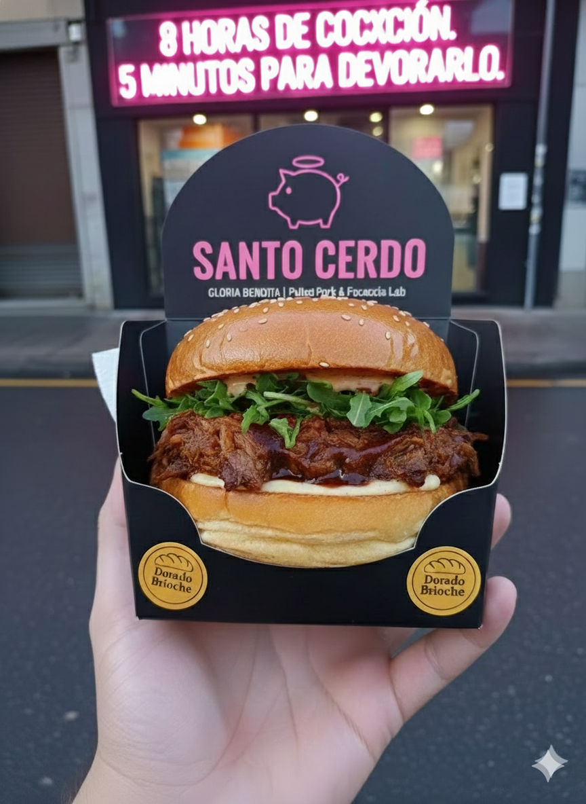

01. CONCEPTO FUNDACIONAL
Concepto: Pulled Pork & Focaccia Lab.
Propuesta de Valor: La sofisticación del "Slow Food" con la velocidad operativa del "Fast Casual". Buscamos ser "Good food fast".
Slogan: "Más que un Kebab, más rápido que un Restaurante".
El Hueco: Ocupamos el "Sweet Spot" entre el Kebab de 6€ (baja calidad) y la Hamburguesería Gourmet de 18€ (lenta y cara).
Producto Estrella: Pulled Pork cocinado 8 horas a baja temperatura, servido en Focaccia Artesanal o Pan Brioche.
02. LA MARCA: CANALLA GOURMET
Arquetipo: El "Canalla Gourmet" (Rebeldía del Street Food + Calidad artesana).
Isotipo: Cerdo minimalista con un halo de santo encima.
Tono de Voz: Directo y obsesivo con la calidad.
"12 horas de cocción. 5 minutos para devorarlo".
"12 horas de cocción. 5 minutos para devorarlo".
Packaging: Barqueta de Cartón Negra (Open Tray) para maximizar la visibilidad del producto y facilitar el "Food Porn" para redes sociales.

03. MODELO OPERATIVO "LEAN"
- Política Inmobiliaria: Búsqueda de locales pequeños (20-40m²) sin salida de humos.
- Ahorro Crítico: Reducción del coste de alquiler (~1.000€ vs 2.500€) y eliminación del Traspaso 0€.
- Cocina: 100% Eléctrica. Operativa Pasiva (Cocción nocturna desatendida) y regeneración en hornos de convección.
- Licencia: Tramitación como "Comercio de Platos Preparados" (Declaración Responsable).
04. ESTRUCTURA SOCIETARIA (50/50)
Estructura: Sociedad Limitada (S.L.) con reparto 50/50.
Gobernanza (Cláusula Anti-Bloqueo)
- Socio Gestor (Tú): Control de Calidad, Recetas, y Decisiones Operativas.
- Socio Capitalista (José): Aportación de 42.100 € y Decisiones Estructurales (Préstamos, Capital).
05. VIABILIDAD Y RENTABILIDAD
Inversión Total
42.100 €
Incluye 10k colchón
Margen Bruto
66.7%
COGS 33.3%
Break-Even
27 u/día
Para cubrir fijos
Payback ROI
17.3 Meses
~1.5 años
EBITDA Objetivo
24.4%
06. VISIÓN DE ESCALABILIDAD
AÑO 1
Apertura Piloto y Recuperar el 100% de la inversión inicial.
AÑO 2
Apertura del 2º local (usando Cash-Flow propio) y centralización de producción.
AÑO 3 (EXIT)
3 Locales Operativos. Facturación ~650k €. Búsqueda de comprador.
07. PLAN DE MARKETING Y VENTAS
- Foco Principal: Convertir el tráfico de Delivery a Take Away para recuperar el margen perdido en las Apps.
- Táctica Digital: Caza agresiva de reseñas (5 estrellas) usando QR + incentivo.
- Visual: Uso de soplete para fundir queso (ASMR / Food Porn).
- Estrategia Offline: Campaña "Caballo de Troya" (tarjeta en delivery con descuento para recogida).
- Presupuesto: Low Cost (150€/mes en publicidad geo-localizada).